Every CMS was builtfor a personat a dashboard.
But you have an agent now.
So we threw the dashboard away.
Publish
A CMS with no dashboard.
One sentence in.
A finished page out.

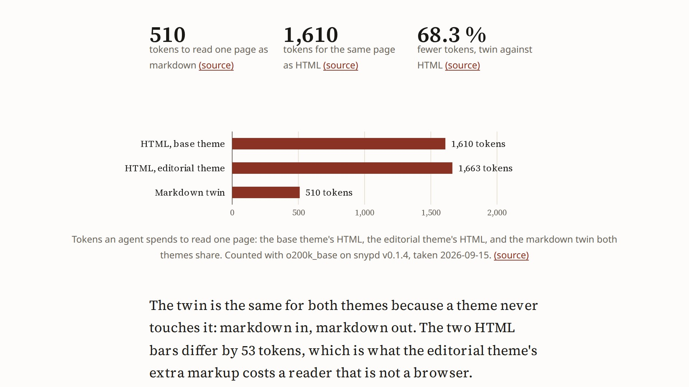
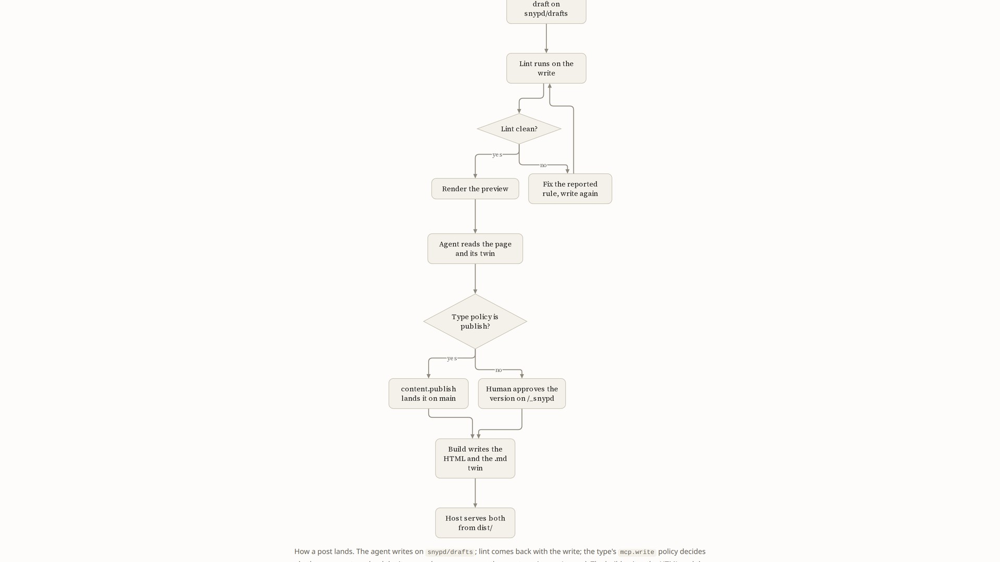
Charts. Diagrams. Sourced numbers.
512 KB
Static HTML. Zero JavaScript.
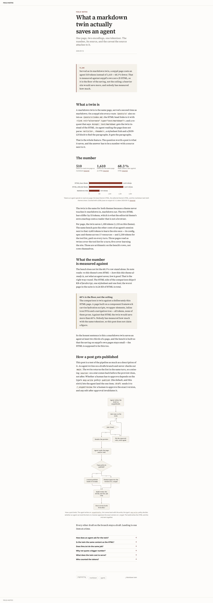
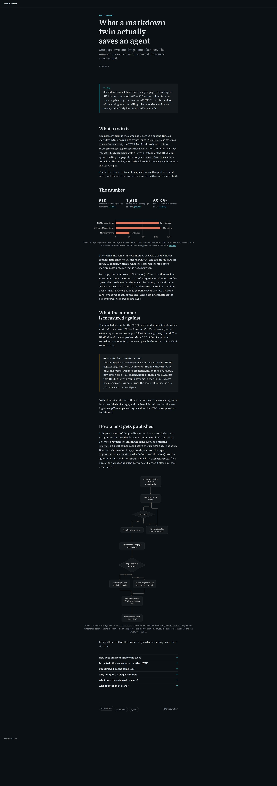
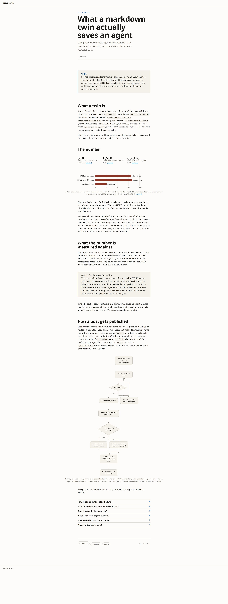
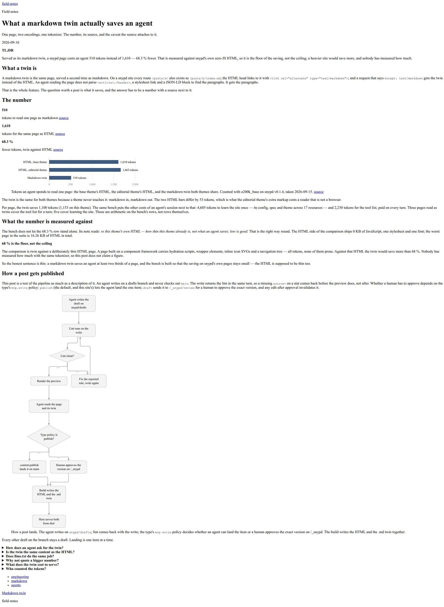
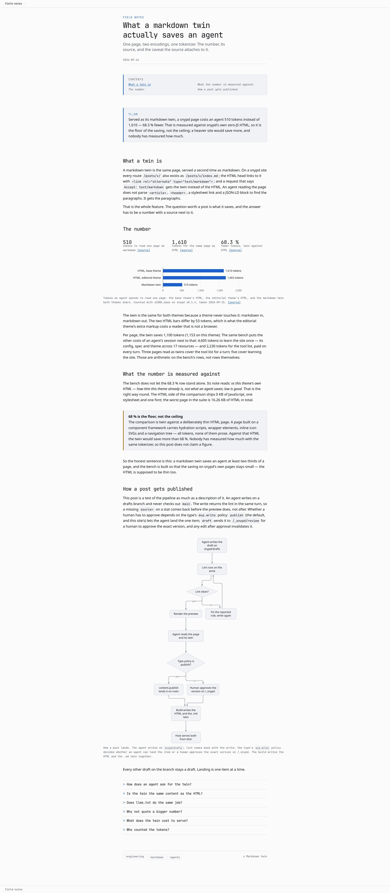
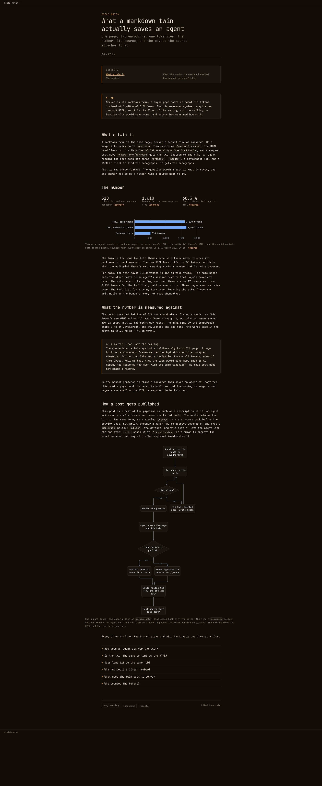
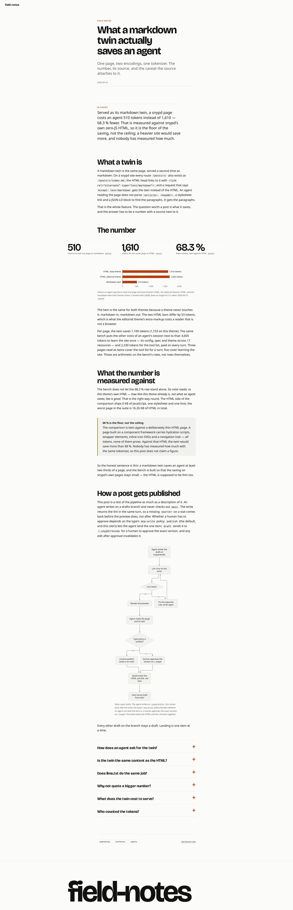
Want anew look?Just say so.
Seven looksin the box.
editorial › papereditorial › inkeditorial › broadsheetbasetechnical › graphitetechnical › phosphorstudio
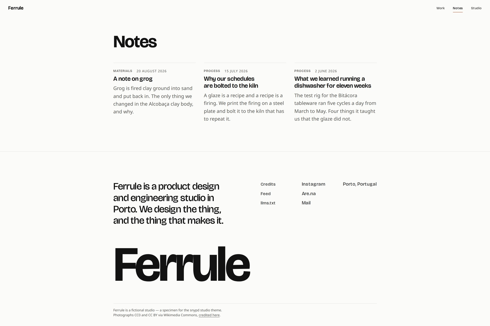
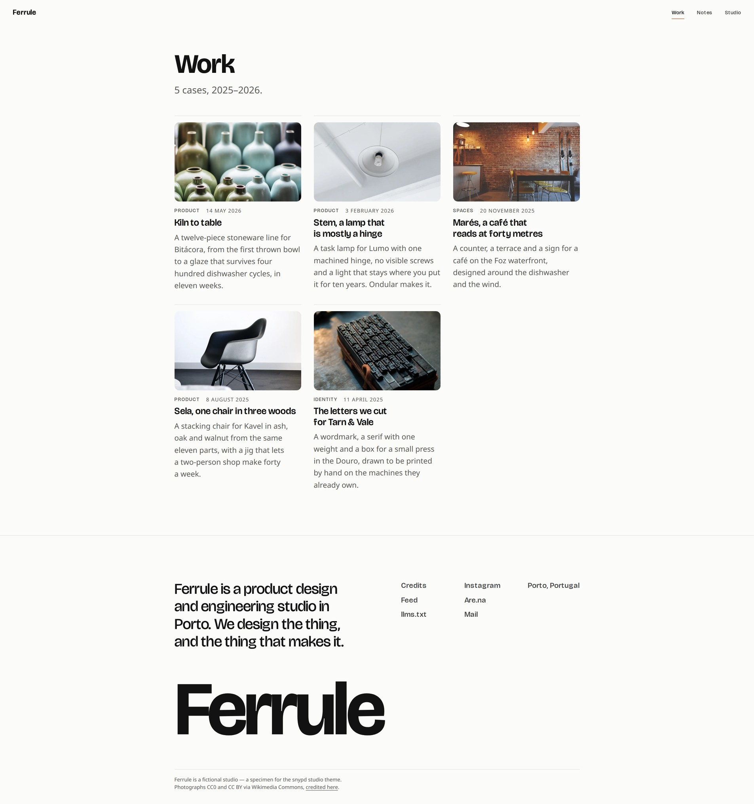
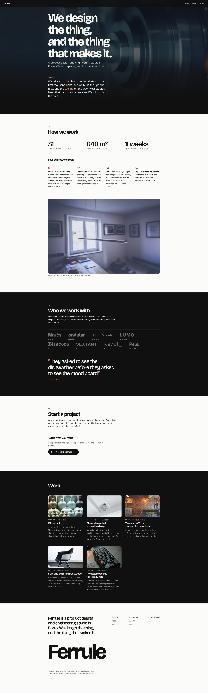
A blog.Case studies.A whole studio site.
content/work/stem.md
content/work/kiln-to-table.md
content/posts/a-note-on-grog.md
content/pages/studio.md
snypd.yaml
All of it, files in your repo.
It checks the agent’s work.
posts/what-a-markdown-twin-actually-saves.md:27 error [unsourced-evidence]
`stat` has no checkable source — a stat without one is an opinion
Refused.
1b44047site: init field-notes
e448df4content: create post/what-a-markdown-twin-actually-saves
6a358adcontent: publish post/what-a-markdown-twin-actually-saves
f3e4f8fcontent: publish post/what-a-markdown-twin-actually-saves (landed on main)
Your repo. Your markdown.Your site.
Give your agent a front door.
$bunx @snypd/cli init
Open source · MIT · snypd.rocks
>